We consider the iterative solution of systems of the form
Whenever  is symmetric and positive definite,
(
is symmetric and positive definite,
( ) represents the first-order optimality conditions of the
equality-constrained quadratic program
) represents the first-order optimality conditions of the
equality-constrained quadratic program
We examine similar Krylov-type iterations for the case where  is unsymmetric and present a methodology by which to derive projected Krylov
methods for systems of the form (
is unsymmetric and present a methodology by which to derive projected Krylov
methods for systems of the form ( ). We concentrate on the Bi-CGSTAB and TFQMR families of methods. The methods we consider
are akin to so-called projection methods,
which are
sometimes regarded as being too expensive and only effective on systems in
which
). We concentrate on the Bi-CGSTAB and TFQMR families of methods. The methods we consider
are akin to so-called projection methods,
which are
sometimes regarded as being too expensive and only effective on systems in
which  is diagonally dominant. We hope that this
paper will correct that reputation by showing that efficient projections
combined with the appropriate Krylov iteration make for a very competitive
numerical method.
is diagonally dominant. We hope that this
paper will correct that reputation by showing that efficient projections
combined with the appropriate Krylov iteration make for a very competitive
numerical method.
Let
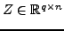 be a matrix whose rows form a basis for the
nullspace of  . Any solution 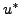 to (
. Any solution 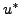 to ( ) may be written
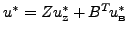, so that (
) may be written
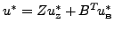, so that ( ) yields
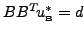, which uniquely determines
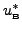 and leaves
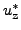
as a solution to
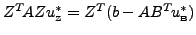. Applying
any Krylov method to the latter system with a preconditioner of the form
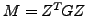, where is such that
) yields
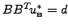, which uniquely determines
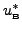 and leaves
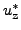
as a solution to
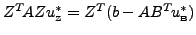. Applying
any Krylov method to the latter system with a preconditioner of the form
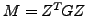, where is such that  is positive definite, is equivalent to
applying the same Krylov method with
is positive definite, is equivalent to
applying the same Krylov method with  as coefficient matrix, with
preconditioning steps replaced by projections computed via (
as coefficient matrix, with
preconditioning steps replaced by projections computed via ( ),
and without recourse to computing 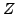. Special care must be observed in an
implementation of this scheme as severe numerical cancellation likely occurs,
especially in the projection steps. We will present a remedy to this difficulty.
),
and without recourse to computing 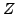. Special care must be observed in an
implementation of this scheme as severe numerical cancellation likely occurs,
especially in the projection steps. We will present a remedy to this difficulty.
In our implementation, factorization of the projection matrix is performed by the
multi-frontal symmetric indefinite MA57 from the Harwell Subroutine
Library. The stopping test implemented by default is triggered when the
projected Bi-CG residual vector  is small or when the residual
vector 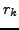 satisfies a Galerkin-type condition, or if the total number of
matrix-vector products exceeds 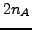, where 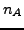 is the order of the 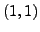
block matrix
is small or when the residual
vector 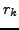 satisfies a Galerkin-type condition, or if the total number of
matrix-vector products exceeds 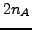, where 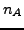 is the order of the 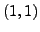
block matrix  . We compare the projected Bi-CGSTAB approach with
a direct LU factorization of (
. We compare the projected Bi-CGSTAB approach with
a direct LU factorization of ( ). The comparison is based on the
total solution time and memory requirements. The LU factorization is realized
by means of the UMFPACK package.
). The comparison is based on the
total solution time and memory requirements. The LU factorization is realized
by means of the UMFPACK package.
We present results on systems arising from the discretization of Navier-Stokes equations for the flow of one or more immiscible incompressible fuilds. Some test cases involve a potentially moving obstacle taken into account by the fictitious domains method.